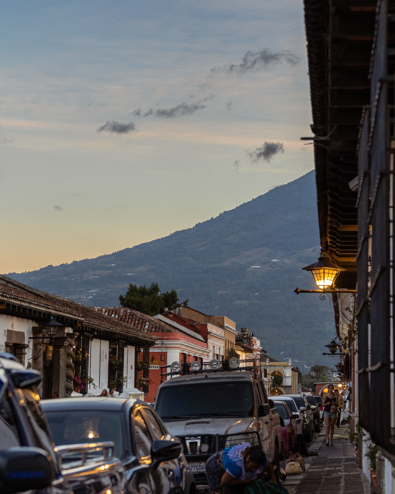
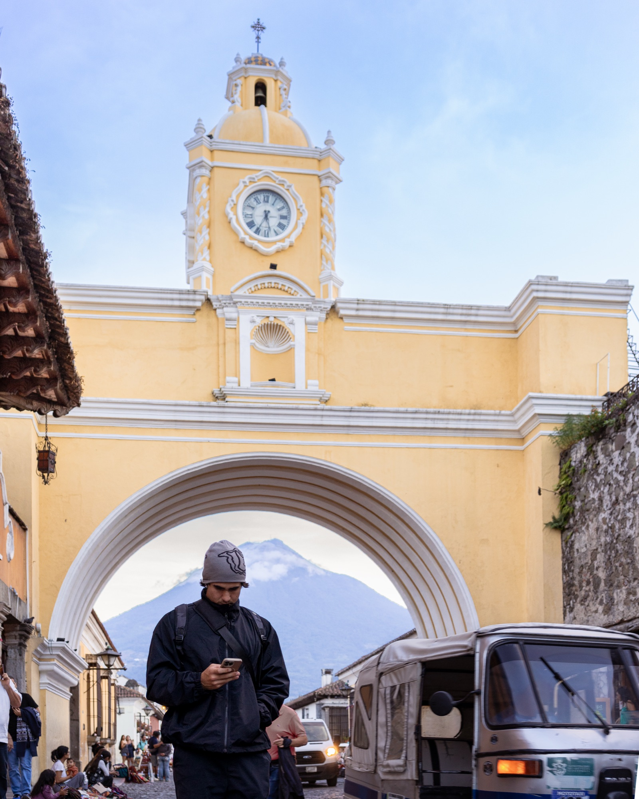
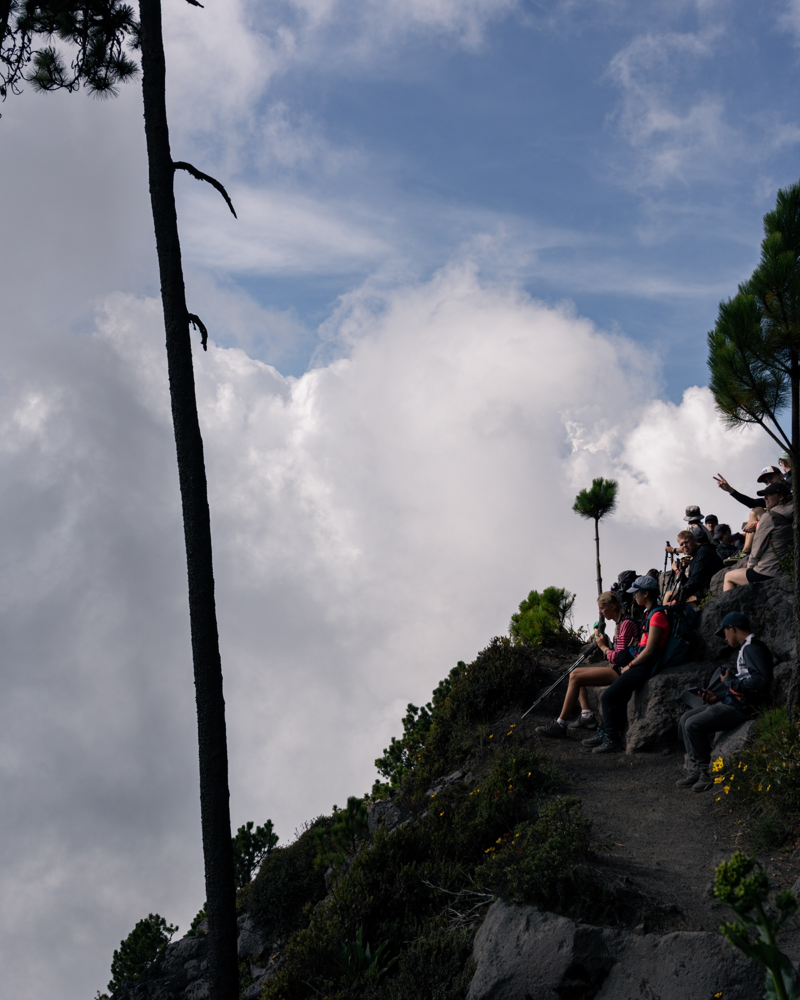
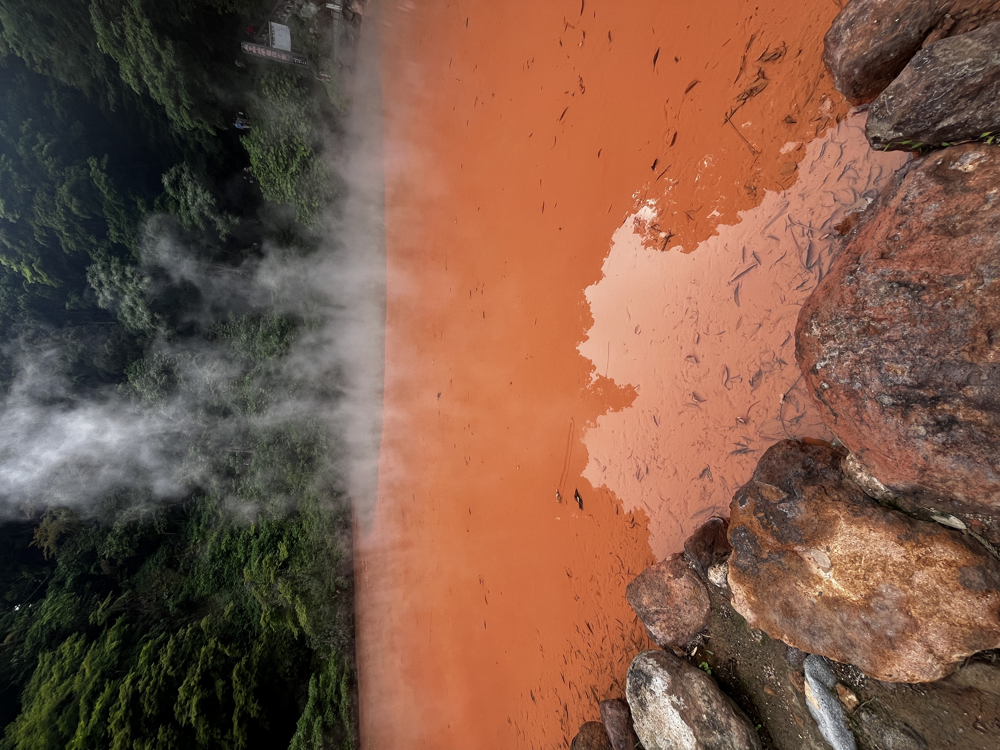
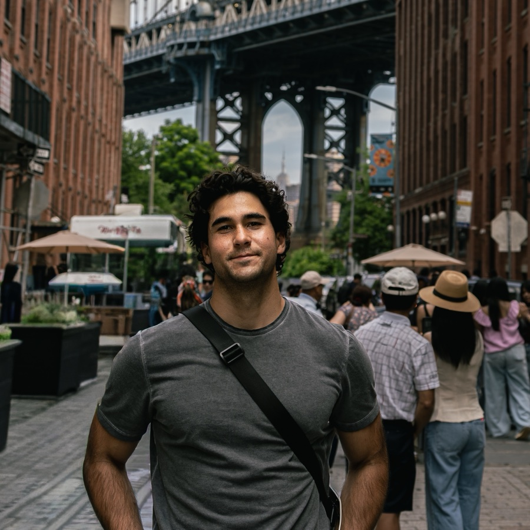

74 photographs in five series.

Japan
35.68° N, 139.65° E
On assignment: interiors and aerials for listings around Santa Cruz County.
FAA Part 107 certified.



I photograph places and the light on them: street and night work, aerials, and whatever the road turns up.